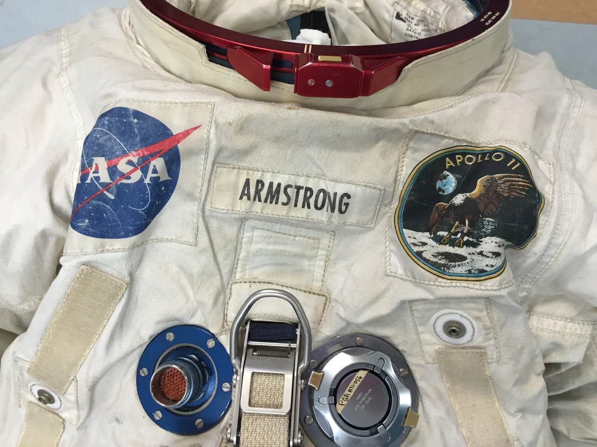
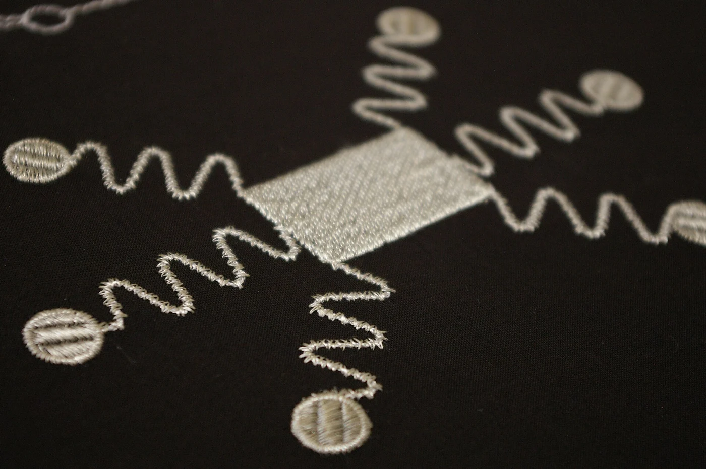

This week’s reading, Advanced Textiles for Health and Wellbeing by Marie O’Mahony, has made me look at fabric in a completely different way. I used to think of textiles as something “passive”, the thing we wear or sit on. O’Mahony shows that a textile can protect, monitor and even take care of the body. It is not only a surface, but a system.
Where these materials come from
O’Mahony describes space, military, medicine and sport as the four key drivers of advanced textiles, and explains how technologies from space and military programmes have moved into everyday health and wellbeing products (O’Mahony, n.d.). A spacesuit is a clear example: layers of high-performance fabric designed to keep a body alive in an extreme environment. I find this interesting because it means many fabrics around us carry a hidden story. The same kind of thinking can end up quietly protecting an older person. It made me see innovation as a kind of “translation”, from a special context into ordinary life. It also changed how I understand “wellbeing”: not only treating illness, but comfort, independence and dignity.

The material is already a design decision
The book first looks at the materials, such as hybrid fibres, new knits, coatings and nanotechnology, and then at how they make new designs possible in clothing, transport and the built environment (O’Mahony, 2011). As a creative computing student, I usually start from an interaction or a screen. This reading made me realise that the material is already a design decision. If a garment is not comfortable, even the most intelligent sensor inside it is meaningless, because nobody will wear it.
Connecting to my practice
In my previous project, Dream Transmitter, each ESP32-S3 node expressed emotions through light, touch and motion, but the touch input lived on boxes made from recycled shoeboxes. I now wonder what would happen if the sensor was the fabric itself, a soft surface you can hold or wear, with conductive yarn instead of hard components. The interaction would move from “pressing a device” to “touching something familiar”, which feels much closer to wellbeing.

A question I still have
When a textile can monitor the body all the time, who owns that data? A fabric that is always “caring” can also be always “watching”. I think designers should treat privacy and consent as part of the material, not something added at the end.
In general, this week’s reading has made me understand that textiles are not just the “outside” of technology, they can be the technology. This term, I want to test conductive thread and soft sensors, and explore how a textile interface can feel calm and personal rather than technical.
Bibliography
- Forster Rohner AG (2012) Gestickte Textile Sensorflächen [Embroidered textile sensor surfaces] [Online image]. Available at: https://commons.wikimedia.org/wiki/File:Gestickte_Textile_Sensorflächen.jpg (Accessed: 24 October 2026). Licensed under CC BY-SA 3.0 DE.
- O’Mahony, M. (2011) Advanced Textiles for Health and Wellbeing. London: Thames & Hudson.
- O’Mahony, M. (n.d.) ‘A survey of Advanced Textiles for Health + Well-Being and their applications in Fashion, Design and the Built Environment’, Design4Health, Sheffield Hallam University. Available at: https://research.shu.ac.uk/design4health/?p=2068 (Accessed: 24 October 2026).
- Plait, P. (2015) Neil Armstrong Apollo spacesuit chest [Online image]. Available at: https://commons.wikimedia.org/wiki/File:Neil-Armstrong-Apollo-11-spacesuit-chest.jpg (Accessed: 24 October 2026). Public domain.